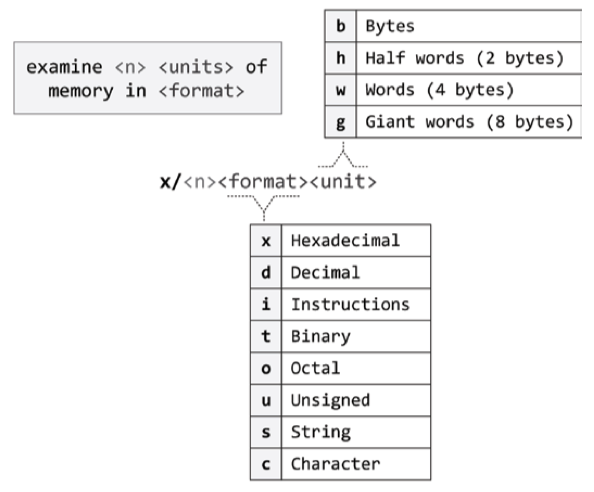

GDB Examining Data
- 10.3 Program Variables
- 10.4 Artificial Arrays
- 10.6 Examining Memory
- 10.8 Automatic Display
- 10.14 Registers
print#
The usual way to examine data in your program is with the print command (abbreviated p), or its synonym inspect. It evaluates and prints the value of an expression.
print [[options] --] expr
print [[options] --] /f expr
expr is an expression. By default the value of expr is printed in a format appropriate to its data type; you can choose a different format by specifying
/f, where f is a letter specifying the format; see Output Formats.
GDB的数据显示格式：
| format | description |
|---|---|
x |
Print the binary representation of the value in hexadecimal. |
d / u |
Print the binary representation of the value in decimal / unsigned. |
o |
Print the binary representation of the value in octal. |
t |
Print the binary representation of the value in binary. The letter ‘t’ stands for “two”. |
a |
Print as an address, both absolute in hexadecimal and as an offset from the nearest preceding symbol. You can use this format used to discover where (in what function) an unknown address is located. |
c |
Cast the value to an integer (unlike other formats, this does not just reinterpret the underlying bits) and print it as a character constant. |
f |
Regard the bits of the value as a floating point number and print using typical floating point syntax. |
s |
Regard as a string, if possible. With this format, pointers to single-byte data are displayed as null-terminated strings and arrays of single-byte data are displayed as fixed-length strings. |
z |
Like ‘x’ formatting, the value is treated as an integer and printed as hexadecimal, but leading zeros are printed to pad the value to the size of the integer type. |
简单使用示例：
expr#
pwndbg> p sizeof(int)
$1 = 4
pwndbg> p sizeof(long)
$2 = 8
pwndbg> p sizeof(void*)
$3 = 8
pwndbg> p sizeof(uintptr_t)
No symbol table is loaded. Use the "file" command.
17.1 Assignment to Variables
set variable (gdb mode only)
Set a convenience variable if it has not already been set, so there is no side-effects.
(gdb) init-if-undefined $baddr = 0xaaaaaaaa0000
(gdb) init-if-undefined $paddr = 0x640
(gdb) p /x $baddr+$paddr
$3 = 0xaaaaaaaa0640
Define a variable for the GDB console context: set [var] $x=expr.
register#
print 也可以打印寄存器内容，以 $ 符号开头引用寄存器，区别普通变量。
调试 Getting Started with Arm Assembly Language - 9. Example: equation calculation 中，汇编函数 kinetic_energy 调用返回 main 中的 printf：
printf("Calling assembly function kinetic_energy with x0=%d and x1=%d results in %d\n", m, v, kinetic_energy(m, v));
printf 总共有 4 个参数，第 1 个参数为 const char *format 是一个字符指针，指向格式字符串，存放在 x0 寄存器，后面 3 个参数依次存放在 x1~x3 寄存器：
# i r x0
(gdb) p/a $x0
$12 = 0xaaaaaaaa07d8
(gdb) p $x1
$8 = 4
(gdb) p $x2
$9 = 5
(gdb) p $x3
$10 = 50
symbol#
Print/Inspect symbol information such as prototype of function.
(gdb) inspect main
$8 = (int (*)(int, char **, char **)) 0xaaaaaaaa07a0 <main>
(gdb) inspect *main
$9 = {int (int, char **, char **)} 0xaaaaaaaa07a0 <main>
(gdb) inspect __libc_start_main
$10 = {int (int (*)(int, char **, char **), int, char **, int (*)(int, char **, char **),
void (*)(void), void (*)(void), void *)} 0xfffff7e27434 <__libc_start_main_impl>
array#
有时候，你需要查看一段连续的内存空间的值。比如数组的一段，或是动态分配的数据的大小。
此时，可以使用GDB的 @ 操作符。@ 的左边是第一个内存的地址，@的右边是欲查看的内存的长度（字节数）。
例如，你的程序中有这样的语句：
于是，在GDB调试过程中，可以以如下命令显示出这个动态数组的取值：
@的左边是数组的首地址的值，也就是变量array所指向的内容，右边则是数据的长度 len。
其输出结果，大约是下面这个样子的：
(gdb) p *array@len
$1 = {2, 4, 6, 8, 10, 12, 14, 16, 18, 20, 22, 24, 26, 28, 30, 32, 34, 36, 38, 40}
如果是静态数组的话，可以直接用 print 数组名，就可以显示数组中所有数据的内容了。
memory#
可以使用 examine 命令（简写是 x）来查看内存地址中的值，语法如下：
n, f, and u are all optional parameters that specify how much memory to display and how to format it; addr is an expression giving the address where you want to start displaying memory.
If you use defaults for nfu, you need not type the slash ‘/’. Several commands set convenient defaults for addr.
-
n: The repeat count is a decimal integer; the default is1. It specifies how much memory (counting by unitsu) to display. If a negative number is specified, memory is examined backward from addr. -
f: The display format is one of the formats used by print (‘x’, ‘d’, ‘u’, ‘o’, ‘t’, ‘a’, ‘c’, ‘f’, ‘s’), ‘i’ (for machine instructions) and ‘m’ (for displaying memory tags). The default is ‘x’ (hexadecimal) initially. -
u: The unit size is any ofbfor Bytes.hfor Halfwords (two bytes).wfor Words (four bytes). This is the initial default.gfor Giant words (eight bytes).
Each time you specify a unit size with x, that size becomes the default unit the next time you use x.
-
addr, starting display address, where you want GDB to begin displaying memory. The expression need not have a pointer value (though it may); it is always interpreted as an integer address of a byte of memory.

x/nfu <addr>
x/3uh 0x54320is a request to display three halfwords (h) of memory, formatted as unsigned decimal integers (‘u’), starting at address 0x54320.x/xg $fphexdump double/giant word (‘g’) of memory addressed by the frame pointer(x29) in hexadecimal (‘x’).-
x/4xg $sphexdump four double/giant words of memory following the stack pointer in hexadecimal (‘x’).x/xg $sp+24: hexdump double word of address$sp+24.x/xw $sp+28: hexdump word of address$sp+28.
-
x/i $pc: print the instruction to be executed next with, equivalent todisassemble $pc,$pc+4. x/10i mainprints ten instructions ofdisassemble main.
View 32 items of the current stack, following the current sp:
# two machine word per line
x/32xg $sp
# pwndbg equivalent: stack 32
# r2 equivalent: pxq $w*32 @ sp
Convenience Vars#
In GDB, the value of $ is the value returned from the previous command.
$_: The variable $_ is automatically set by the x command to the last address examined (see Examining Memory). Other commands which provide a default address for x to examine also set $_ to that address; these commands include info line and info breakpoint. The type of $_ is void * except when set by the x command, in which case it is a pointer to the type of $__.
$__: The variable $__ is automatically set by the x command to the value found in the last address examined. Its type is chosen to match the format in which the data was printed.
(gdb) x/xg $fp
0xfffffffff210: 0x0000000000000001
(gdb) p $_
$4 = (int64_t *) 0xfffffffff210
(gdb) p $__
$5 = 1
display#
可以设置一些自动显示的变量，当程序停住时，或是在你单步跟踪时，这些变量会自动显示。相关的GDB命令是 display。
display <expr>display/<fmt> <expr>display/<fmt> <addr>
expr 是一个表达式，fmt 表示显示的格式，addr 表示内存地址。
当你用display设定好了一个或多个表达式后，只要你的程序被停下来，GDB会自动显示你所设置的这些表达式的值。
可执行 info display 列举查看已经设置的 display points。此外，GDB 还提供了删除命令：
undisplay <dnums...>delete display <dnums...>
dnums 为自动显示的编号，多个编号之间用空格分隔。
registers#
寄存器中放置了程序运行时的数据，比如程序当前运行的指令地址（ip），程序的当前堆栈地址（sp）等等。
除了可以使用 print(p) 和 examine(x) 命令查看指定寄存器的值，也可以使用 info(i) 命令查看寄存器状态信息。
要查看寄存器的值，可以使用如下命令：
info registers(i r)：查看寄存器的情况。（除了浮点寄存器）
info all-registers：查看所有寄存器的情况。（包括浮点寄存器）
info registers <regname ...>(i r x0 x1)：查看指定的寄存器的情况。
Since A64 instructions are still 32 bits long as A32(except for T32 mode), we can examine instructions around $pc with a difference value of 4 bytes.
x/ni $pc
x/i $pc: print the instruction to be executed next with.x/3i $pc: prints three downward instructions include$pc.x/2i $pc-8: prints two instructions above$pc.x/3i $pc-8: prints three upward instructions include$pc.x/2i $pc+4: prints two instructions below$pc, equivalent todisassemble $pc+4,$pc+12.
在调试 Getting Started with Arm Assembly Language - 9. Example: equation calculation 中，汇编函数 kinetic_energy 调用返回 main 中的 printf 函数，其第 1 个参数为 const char *format，存放在 x0 寄存器，可以进一步使用 examine 命令检查指针指向的内存中的格式字符串。
(gdb) p/a $x0
$12 = 0xaaaaaaaa07d8
(gdb) x/s $x0
0xaaaaaaaa07d8: "Calling assembly function kinetic_energy with x0=%d and x1=%d results in %d\n"
symbol#
ptype[/flags] [arg]
ptype accepts the same arguments as
whatis, but prints a detailed description of the type, instead of just the name of the type. See Expressions.
o: Print the offsets and sizes of fields in a struct, similar to what the pahole tool does. This option implies the /tm flags.
Issuing a ptype /o [struct|union] command to print offsets inside an struct/union:
- (gdb) ptype /o struct tuv
- (gdb) ptype /o union qwe